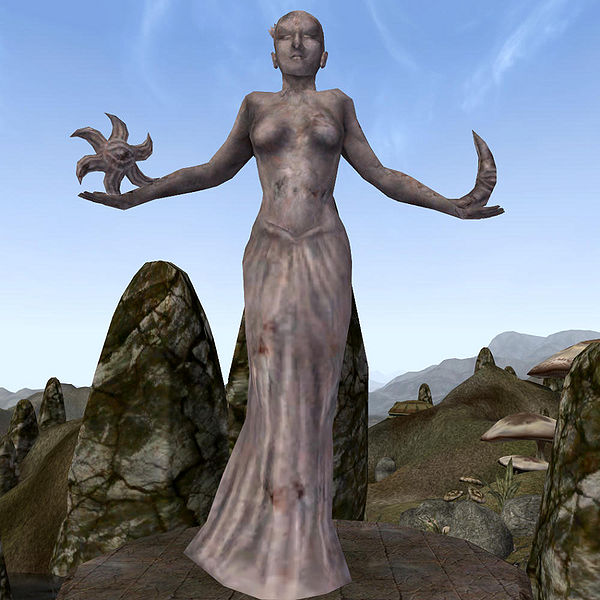
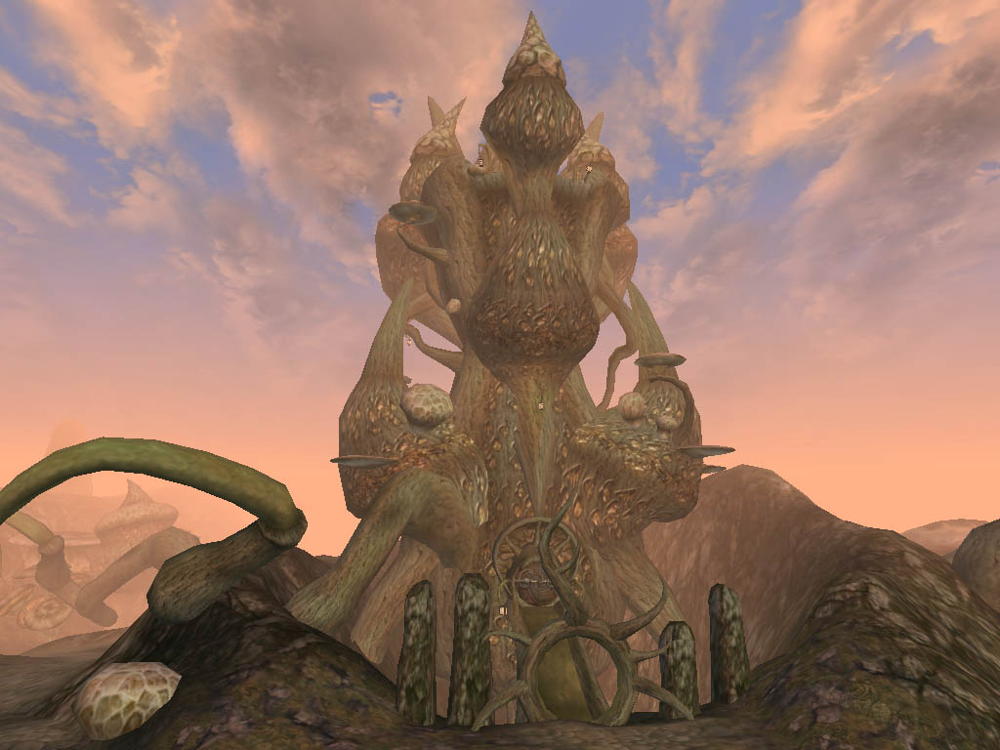

Morrowind:Azura's Coast
Morrowind: Places
 Map of Azura's Coast |
|
 Shrine of Azura |
|
 Tel Naga, a typical Wizard Tower |
The Azura's Coast region consists mainly of the numerous islands to the south and east of Vvardenfell. It includes all of the southern islands east of the Daedric ruin of Ald Sotha, extends north to include the islands up the eastern coast and Zafirbel Bay, and three small peninsulas on the southeastern corner of Vvardenfell where a Shrine of Azura can be found.
The area is fairly desolate, and most of the territory is claimed by House Telvanni. It includes the towns and towers of Tel Mora, Tel Aruhn, Sadrith Mora, Tel Fyr, and Tel Branora. It is also home to numerous wizards, sorcerers, necromancers, and Ashlander Mabrigashes. Many of these are based in old Velothi remnants or caves, rather than wizard towers. By no means are all magic-workers in the area Telvanni, but the dominance of the Telvanni does mean that there is little objection to their activities.
As the area is dominated by the Telvanni, it is one of the least subject to the power of either the Empire or the Tribunal, though both have enclaves in the House capital, Sadrith Mora. Since Telvanni lords are usually over a thousand years old and very powerful, they tend to see the "gods" of the Tribunal as peers rather than supreme beings.
Although the area receives regular rain, the rocky terrain limits the region's agriculture. However, there are Ashlander camps scattered throughout the region. The area is full of ancestral tombs, and there are several significant Daedric Shrines on the islands. Many bandits prey on unwary travelers.